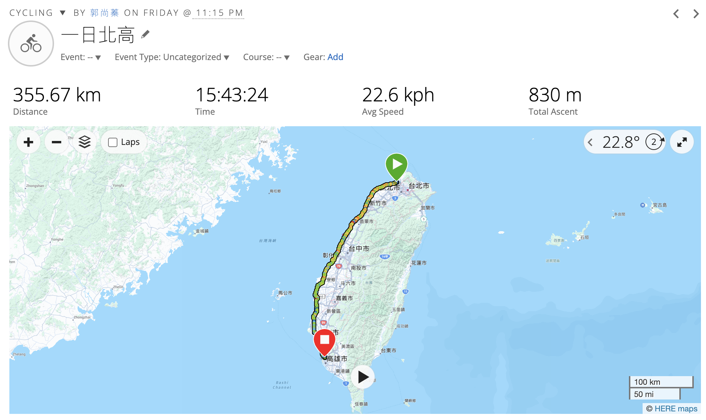
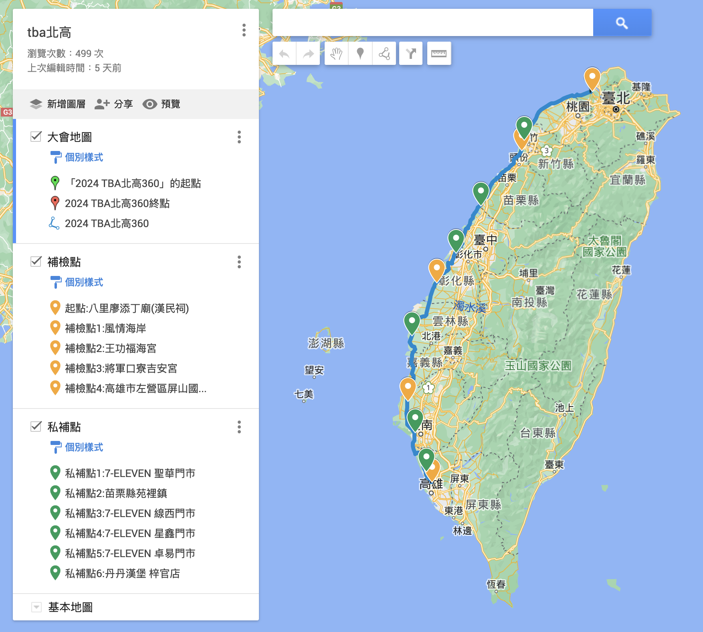

2024 TBA 北高360自行車認證
一開始以為 20 小時會很趕，結果我們好像騎很快耶XDDD 加上休息時間總共 16 小時左右，少了 4 小時，可惜了 也感謝一起騎車車的大家😃
準備的東西
需要準備的東西其實蠻多的🫣，我怕我忘記，所以做了一張圖再出發前打勾確認 🔸 腳踏車上面：前燈、後燈、車錶、工具包（挖胎棒、內胎、補胎片、氣瓶） 🔸 人：手機、防風眼鏡、帽子、水壺、卡鞋、外套、手錶、能量膠、身分證、健保卡、藥 🔸 保母車上：換洗衣物（車衣、回程衣服）、拖鞋、毛巾
補給站規劃
因為我們是有保母車的，所以事前大家有先規劃好預計停留的點 ✅ 起點：八里廖添丁 ☑️ 私補點 1：7-11 聖華門市 （65.73 km） ✅ 補檢點 1 （73.22 km） ☑️ 私補點 2：苗栗縣苑裡鎮 （124.11 km） ☑️ 私補點 3：7-11 線西門市 （164.11 km） ✅ 補檢點 2 （192.07 km） ☑️ 私補點 4：7-11 星鑫門市 （236.64 km） ✅ 補檢點 3 （288.63 km） ☑️ 私補點 5：7-11 卓易門市 （312.72 km） ☑️ 私補點 6：丹丹漢堡 （346.5 km） ✅ 終點
出發出發 gogogogo ~
表定上 11 點出發，但大會的感應區...好遠，走了快一公里，最後 11:30 才出發 丞相很給力，前面一路順下去，速度 40km/h 我雖然有帶隱形眼鏡，但閃光的關係，我看人都是一條線 XDDD，下次還是直接帶眼鏡好了 也有的人前燈比較亮，都可以打到騎在後面的我，所以我都閃來閃去，要不然我真的看不到路
完賽
我們完全是提早完成，果然是運動咖們～我是本來還想繼續玩 哈哈哈